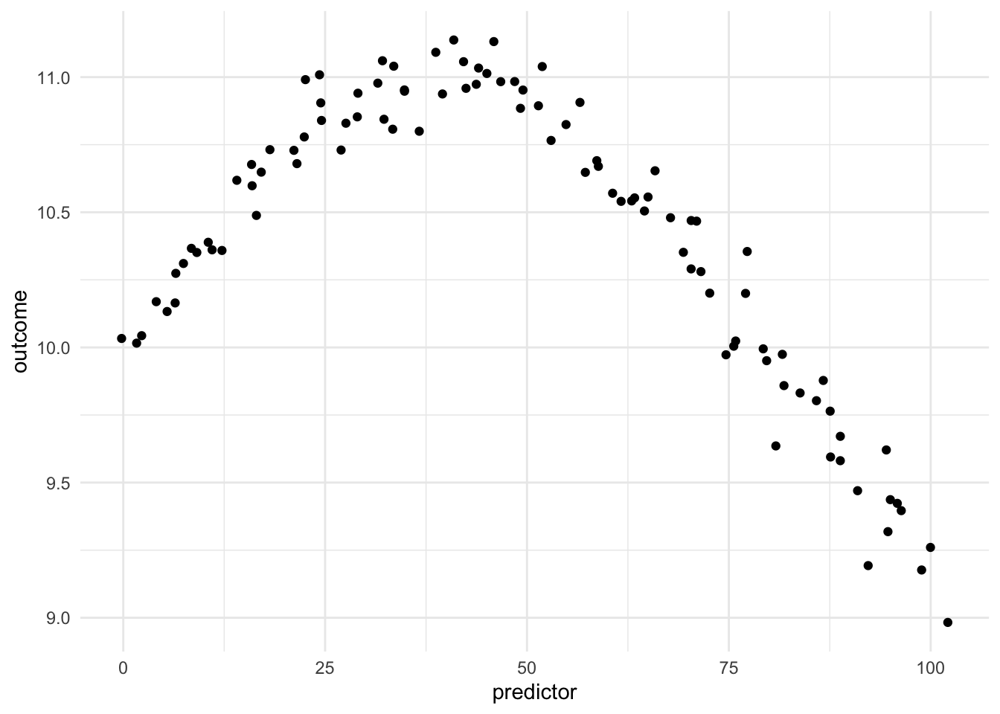
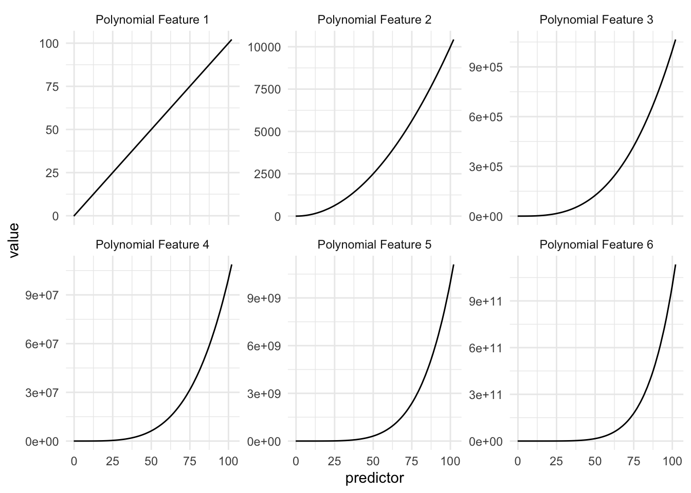
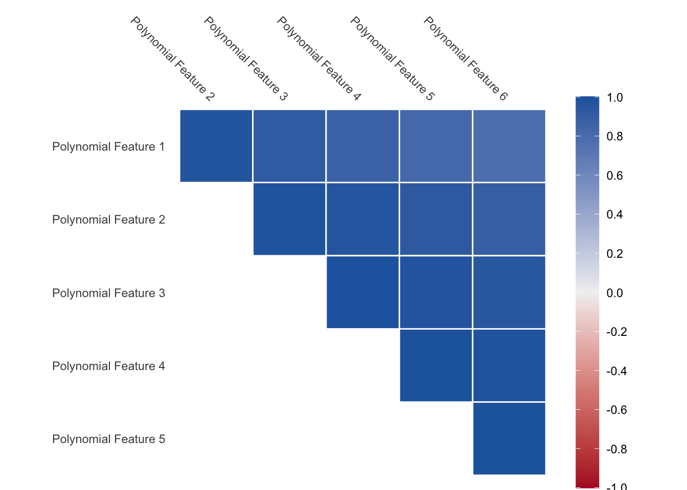
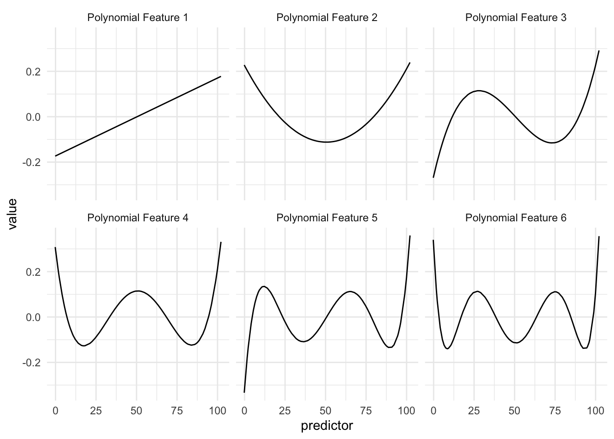
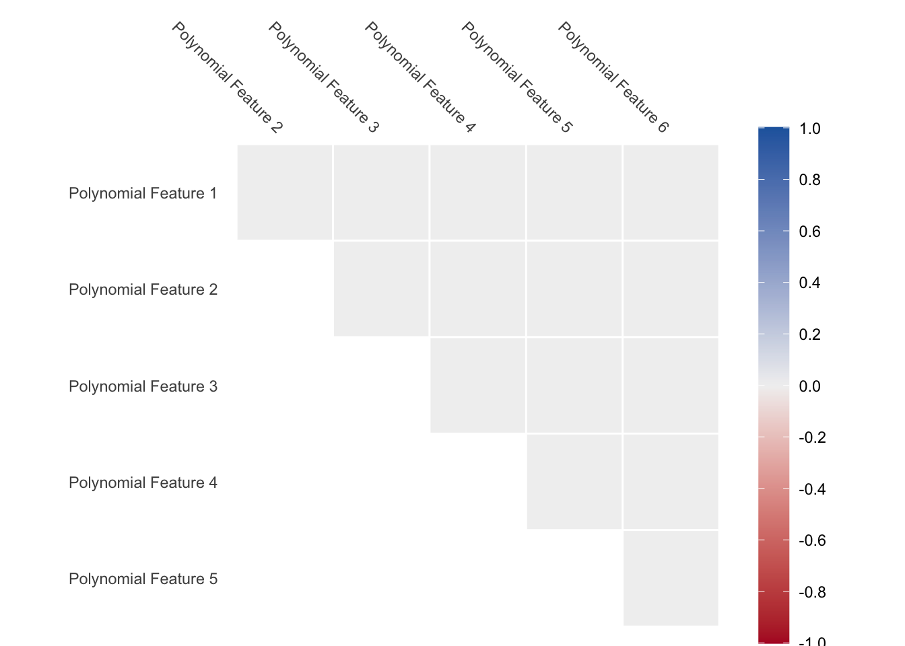
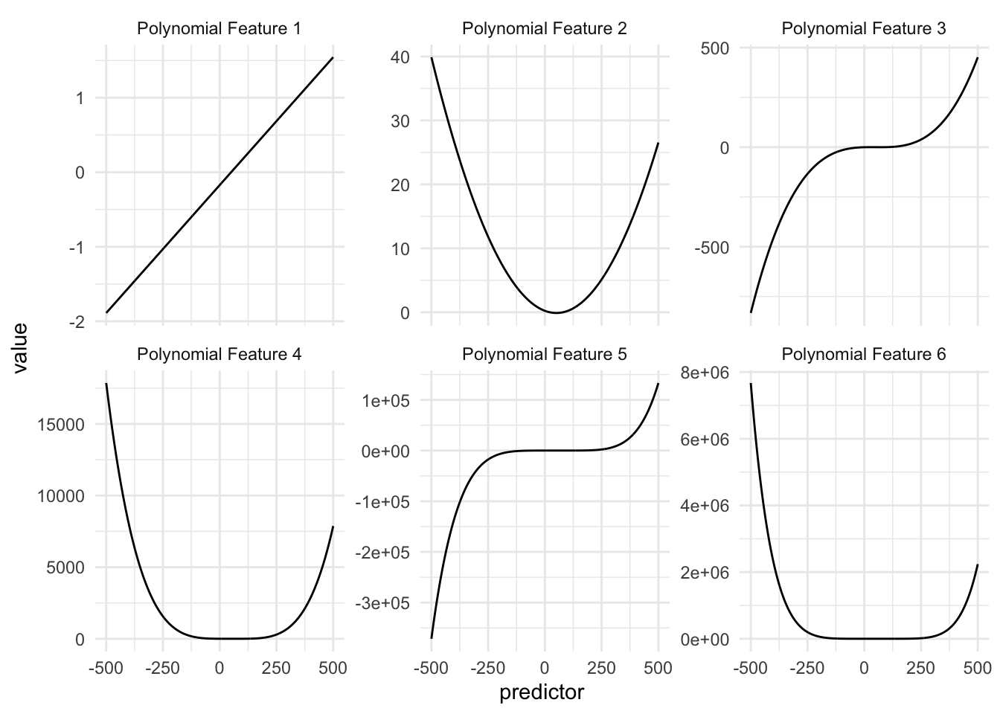
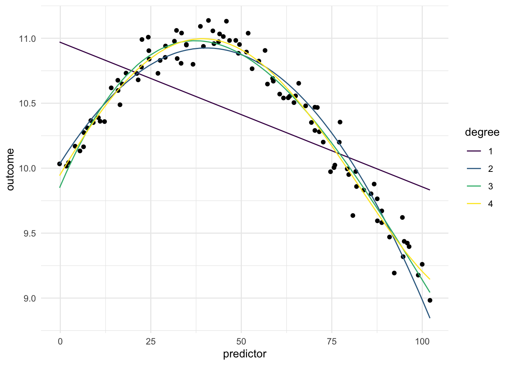

Polynomial expansion, is one way to turn a numeric variable into something that can represent a non-linear relationship between two variables. This it useful in a modeling content, since it allows us to model non-linear relationships between predictors and outcomes. This is a trained method.
Being able to transform a numeric variable that has a non-linear relationship with the outcome into one or more variables that does have linear relationships with the outcome is of great importance, as many models wouldn’t be able to work with these types of variables effectively themselves. Below is a toy example of one such variable
Loading required package: dplyr
Attaching package: 'dplyr'
The following objects are masked from 'package:stats':
filter, lag
The following objects are masked from 'package:base':
intersect, setdiff, setequal, union
Attaching package: 'recipes'
The following object is masked from 'package:stats':
step

Figure 16.1: Non-linear relationship between predictor and outcome.
Here we have a non-linear relationship. It is a fairly simple one, the outcome is high when the predictor takes values between 25 and 50, and the outside the ranges it takes over values. Given that this is a toy example, we do not have any expert knowledge regarding what we expect the relationship to be outside this range. The trend could go back up, it could go down or flatten out. We don’t know.
As we saw in Chapter 14, one way to deal with this non-linearity is to chop up the predictor and emit indicators for which region the values take. While this works, we are losing quite a lot by detail by the rounding that occurs.
We know that we can fit a polynomial function to some data set. And it would take the following format
\[
\text{poly}(x,\ \text{degree} = n) = a_0 + a_1 x + a_2 x ^ 2 + \cdots + a_n x ^ n
\]
This can then be used to to generate features. Such that each feature is done taking the value to a given degree and multiplying according with the corresponding coefficient.
Table 16.1: Polynomial values for different values of the predictor, for constants equal to 1.
x
x^2
x^3
x^4
1
1
1
1
2
4
8
16
3
9
27
81
4
16
64
256
5
25
125
625
In the above table we are seeing a small example of how this could be done, using a 4th degree polynomial with coefficients of 1. If we were to look at the individual functions over the domain of our data we are seing the following

Figure 16.2: Each part of the spline detects a part of the data set.
This is to be expected, but we are noticing that these curve look quite similar, and the values these functions are taking very quickly escalate. And this is for predictor values between 0 and 100, higher values will get even higher, possibly causing overflow issues.
We also have an issue where the values appear quite correlated, since the functions are all increasing. As we see below, the correlation between the variables are close to 1 for all pairs.

Figure 16.3: Almost complete correlation is found between variables
This is a problem that needs to be dealt with. The way we can deal with this is by calculation orthogonal polynomials instead. We have that any set polynomial function can be rewritten as a set of orthogonal polynomial functions.
TODO Add more bath background here
With this, we deal with the two problems we had before. As seen in the figure below, the functions takes smaller values within their ranges

Figure 16.4: Each part of the spline detects a part of the data set.
And since they are orthogonal by design, we won’t have to worry about correlated features.

Figure 16.5: No correlation to be found
The interpretation of these polynomial features are not as easy as with binning in Chapter 14 or splines Chapter 15, but the calculations are quite fast and versatile.

Figure 16.6: Polynomial features don’t handle extrapolation well and values outside the normal ranges can explode quite fast for higher degree polynomials.
Below is a chart of how well using polynomial expansion works when using it on our toy example. Since the data isn’t that complicated, having degree larger than 1 will do the trick.

Figure 16.7: A first degree polynomial isn’t enough to fit this data, but second and higher does a good job.
16.1 Pros and Cons
16.1.1 Pros
Works fast computationally
Good performance compared to binning
Doesn’t create correlated features
is good at handling continuous changes in predictors
16.1.2 Cons
arguably less interpretable than binning and splines
can produce a lot of variables
have a hard time modeling sudden changes in distributions
16.2 R Examples
We will be using the ames data set for these examples.